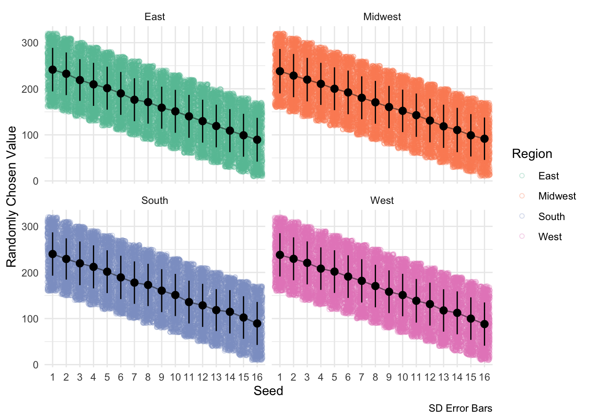
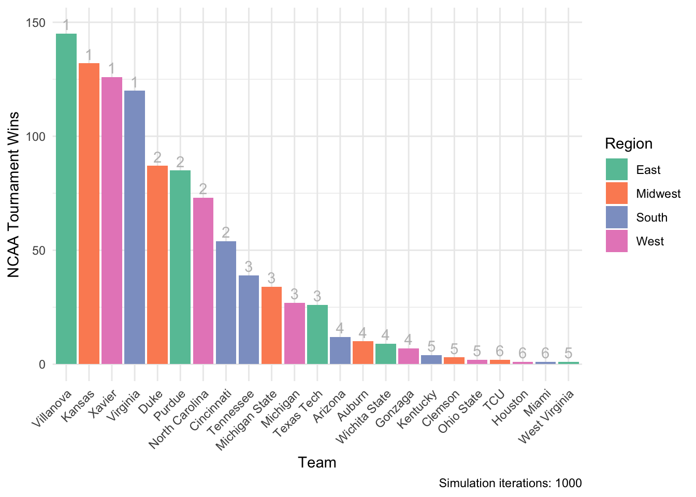
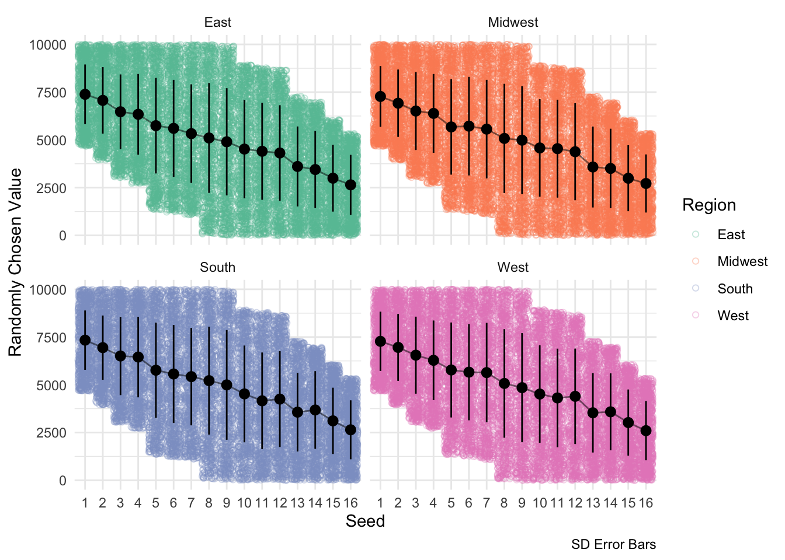
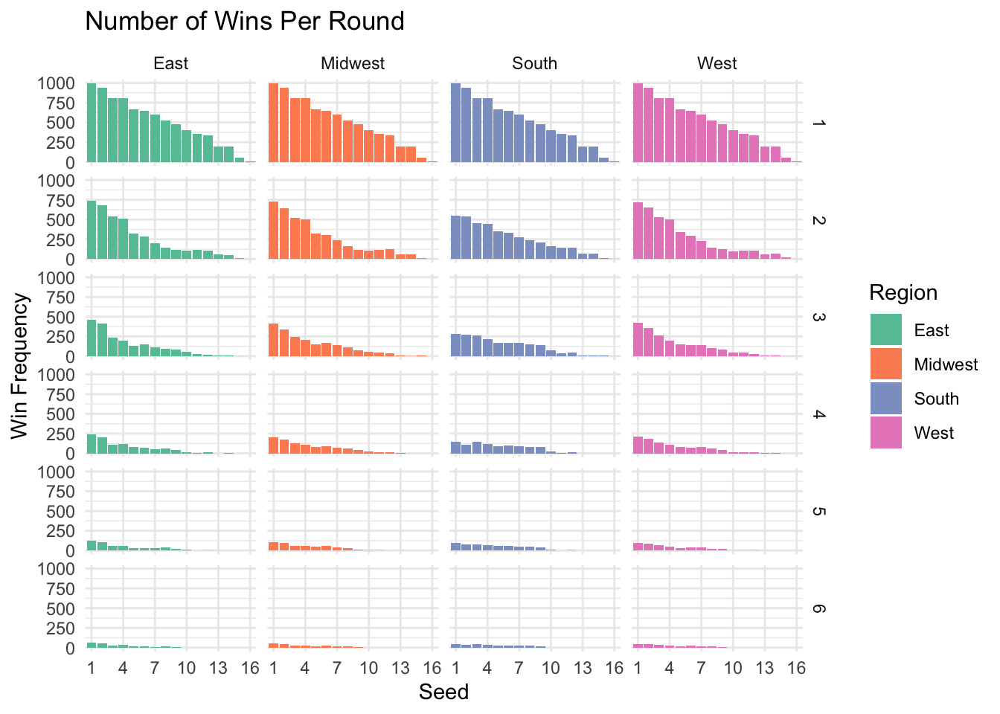
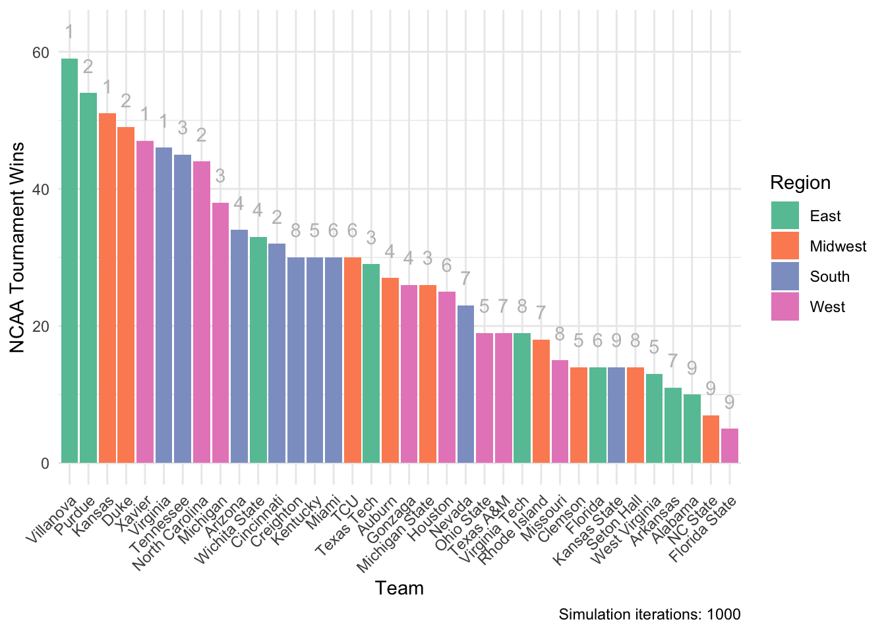
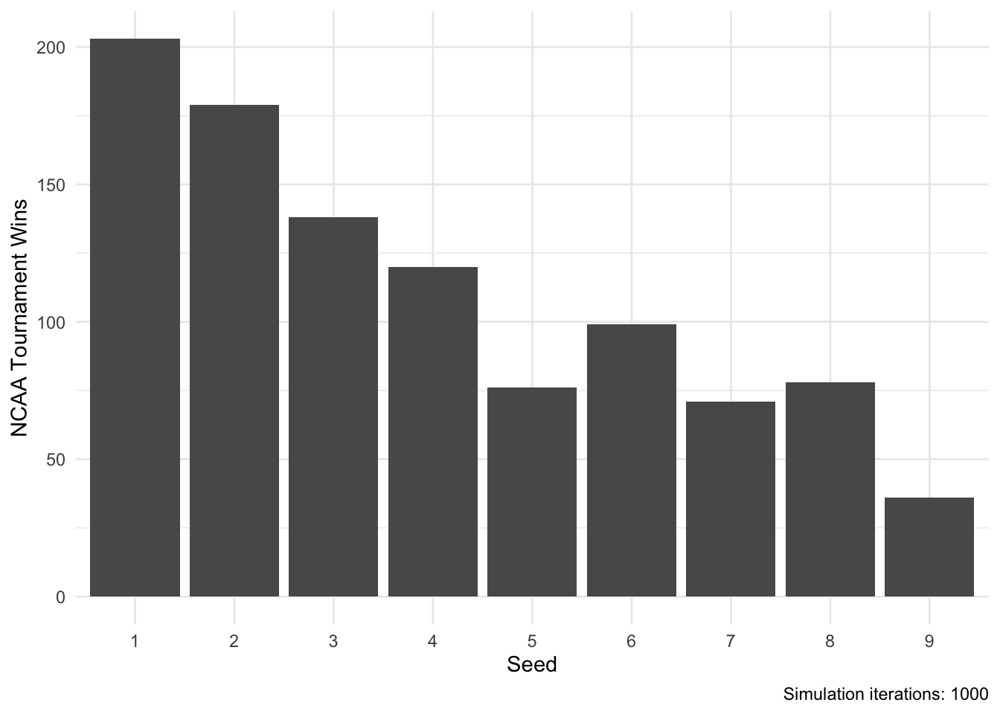
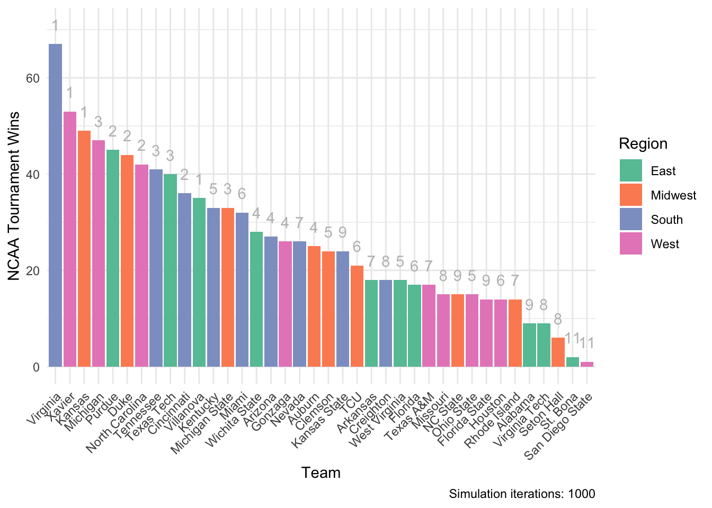
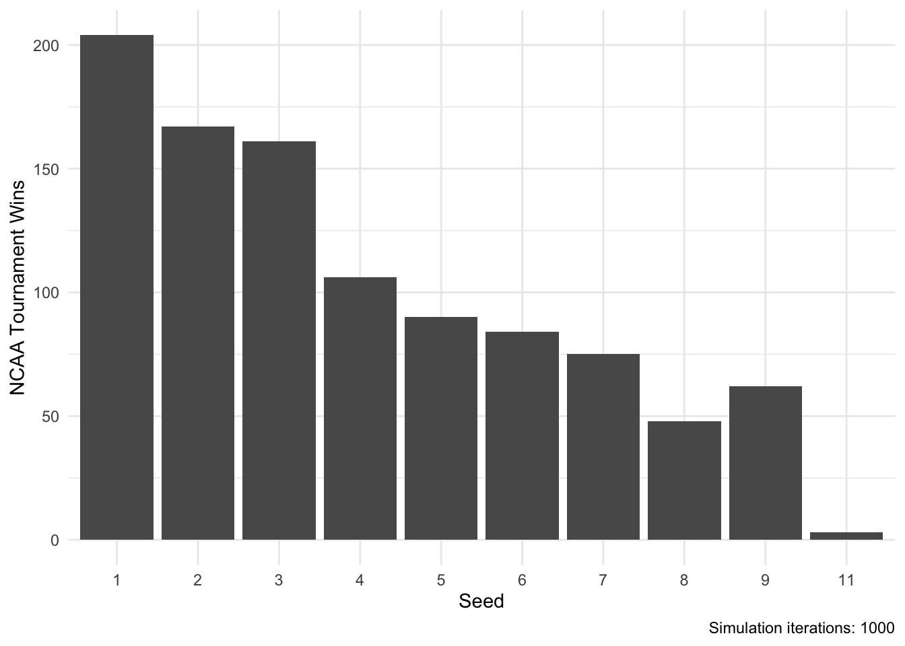
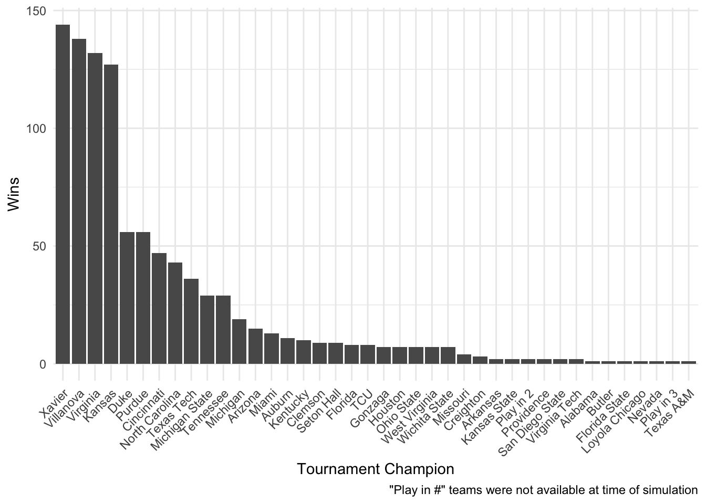

library(tidyverse); library(repmis); library(httr)Simulating 2018 NCAA March Madness Tournament Performance in R
Academic
R
March Madness
A bunch of grad students compete to design the best March Madness algorithm.
It’s that time of the year again–MARCH MADNESS.
A few of us graduate students decided it would be fun to simulate this year’s NCAA Men’s National Championship tournament using R. When we all met to discuss our method to simuluate tournament performance, we quickly realized that each of us had a different method in mind. These methods differed in not only how we determined probability of win via seed, but also the techniques and packages implemented within R. Below showcases 3 different methods we used, each with different results. The methods are arranged in order of increasing use of historical data.
Matt’s Method
The packages needed for this method:
Simulation
This method (that Nick actually invented) relies on the seed of each team in the tournament. The idea is to assign a range of numbers to each seed with the ranges of lower seeds (e.g., #1, #2, #3, …) containing greater numbers than the ranges of higher seeds (e.g., …, #14, #15, #16). Just like this:
| Seed | Lower.Bound | Upper.Bound |
|---|---|---|
| 1 | 160 | 320 |
| 2 | 150 | 310 |
| 3 | 140 | 300 |
| 4 | 130 | 290 |
| 5 | 120 | 280 |
| 6 | 110 | 270 |
| 7 | 100 | 260 |
| 8 | 90 | 250 |
| 9 | 80 | 240 |
| 10 | 70 | 230 |
| 11 | 60 | 220 |
| 12 | 50 | 210 |
| 13 | 40 | 200 |
| 14 | 30 | 190 |
| 15 | 20 | 180 |
| 16 | 10 | 170 |
Then, randomly sample from each team’s range and assign the win to the higher number (for each match-up). This is a crude method that will roughly correspond to seed. In other words, each seed has a higher probability of winning over each subsequent seed; however, it is theoretically possible, although very unlikely, for a 16th seed to win the tournament. A simulation given purely historical data would not be able to account for this because a 16th seed has never made it past the first round prior to the 2018 tournament.
Below is the code I used to run the simulation. I tried to avoid for loops as much as possible and learn the map() functions in the purrr package. The code is not as efficient as I would have liked it to be, but it gets the job done and allows for a variety of plots.
# Sets the regions
regions <- c('South', 'East', 'West', 'Midwest')
# Import the team names and their seeds from 2018
# These data are being pulled from this website's Github repo
link <- 'https://raw.githubusercontent.com/mkmiecik14/mkmiecik14.github.io/master/data/ncaa-2018-teams-updated.csv'
# from https://stackoverflow.com/questions/60714074/download-csv-file-from-github-using-httr-get-request
data <- GET(link)
ncaa.2018 <-
read_csv(content(data, "raw")) %>%
rename(region = Region, team = Team1, seed = Seed)
# Initializations
iters <- 1000
results <- probTableHolder <- vector('list', length = iters)
# Sets seed for reprodicible results
set.seed(18)The simulation was then ran 1000 times:
for(i in 1:iters) {
# Creates whole tournament probability set
probTableHolder[[i]] <- probTable <- regions %>%
map_df(~tibble(seed = c(1:16),
lowNum = seq(160, 10, -10),
highNum = seq(320, 170, -10)) %>%
group_by(seed) %>%
mutate(result = sample(lowNum:highNum, 1)) %>%
ungroup()) %>%
mutate(region = rep(regions, each = 16)) %>%
inner_join(ncaa.2018, by = c('seed', 'region'))
# Round 1
r1 <- regions %>%
map_df(~tibble(match.up = 1:8, t1.seed = 1:8, t2.seed = 16:9) %>%
mutate(t1.res = probTable$result[1:8],
t2.res = probTable$result[16:9],
seed = if_else(t1.res > t2.res, t1.seed, t2.seed))) %>%
mutate(region = rep(regions, each = 8)) %>%
inner_join(probTable, by = c('seed', 'region'))
# Round 1 results
r1.res <- r1 %>% select(match.up, region, team, seed, result)
# Round 2
r2 <- regions %>%
map_df(~tibble(r2.match.up = 1:4,
r2.match.up.1 = 1:4,
r2.match.up.2 = as.integer(seq(8, 5, -1)),
region = .) %>%
left_join(r1.res,
by = c('r2.match.up.1' = 'match.up',
'region' = 'region')) %>%
rename(t1.team = team, t1.seed = seed, t1.res = result) %>%
left_join(r1.res,
by = c('r2.match.up.2' = 'match.up',
'region' = 'region')) %>%
rename(t2.team = team, t2.seed = seed, t2.res = result) %>%
mutate(seed = if_else(t1.res > t2.res, t1.seed, t2.seed))) %>%
inner_join(probTable, by = c('region', 'seed'))
# Round 2 results
r2.res <- r2 %>% select(r2.match.up, region, team, seed, result)
# Round 3
r3 <- regions %>%
map_df(~tibble(r3.match.up = 1:2,
r3.match.up.1 = 1:2,
r3.match.up.2 = 4:3,
region = .) %>%
left_join(r2.res,
by = c('r3.match.up.1' = 'r2.match.up',
'region' = 'region')) %>%
rename(t1.team = team, t1.seed = seed, t1.res = result) %>%
left_join(r2.res,
by = c('r3.match.up.2' = 'r2.match.up',
'region' = 'region')) %>%
rename(t2.team = team, t2.seed = seed, t2.res = result) %>%
mutate(seed = if_else(t1.res > t2.res, t1.seed, t2.seed))) %>%
inner_join(probTable, by = c('region', 'seed'))
# Round 3 results
r3.res <- r3 %>% select(r3.match.up, region, team, seed, result)
# Round 4
r4 <- regions %>%
map_df(~tibble(r4.match.up = 1,
r4.match.up.1 = 1,
r4.match.up.2 = 2,
region = .) %>%
inner_join(r3.res,
by = c('r4.match.up.1' = 'r3.match.up',
'region' = 'region')) %>%
rename(t1.team = team, t1.seed = seed, t1.res = result) %>%
inner_join(r3.res, by = c('r4.match.up.2' = 'r3.match.up',
'region' = 'region')) %>%
rename(t2.team = team, t2.seed = seed, t2.res = result) %>%
mutate(seed = if_else(t1.res > t2.res, t1.seed, t2.seed))) %>%
inner_join(probTable, by = c('region', 'seed'))
# Round 4 results
r4.res <- r4 %>% select(r4.match.up, region, team, seed, result)
# Semifinal
semi.final <- tibble(t1.region = c('South', 'East'),
t2.region = c('West', 'Midwest')) %>%
left_join(r4.res, by = c('t1.region' = 'region')) %>%
rename(t1.team = team, t1.seed = seed, t1.res = result) %>%
left_join(r4.res, by = c('t2.region' = 'region')) %>%
rename(t2.team = team, t2.seed = seed, t2.res = result) %>%
mutate(team = if_else(t1.res > t2.res, t1.team, t2.team)) %>%
inner_join(probTable, by = 'team')
# Semifinal results
semi.final.res <- semi.final %>% select(region, team, seed, result)
# Final
final <- tibble(t1.region = semi.final.res$team[1],
t2.region = semi.final.res$team[2],
t1.team = semi.final.res$team[1],
t2.team = semi.final.res$team[2],
t1.seed = semi.final.res$team[1],
t2.seed = semi.final.res$team[2],
t1.res = semi.final.res$result[1],
t2.res = semi.final.res$result[2]) %>%
mutate(team = if_else(t1.res > t2.res, t1.team, t2.team)) %>%
inner_join(probTable, by = 'team')
final.res <- final %>% select(region, team, seed, result)
results[[i]] <- this.result <- bind_rows(r1.res, r2.res, r3.res, r4.res,
semi.final.res, final.res,
.id = 'round')
#print(i) # Uncomment to see progress
}Data Viz
The results of this simulation were saved out and can be imported from this website’s Github data repository like this:
# Loading probability tables from github
probTableLink <- 'https://github.com/mkmiecik14/mkmiecik14.github.io/blob/master/data/probTableHolder-updated.RData?raw=true'
source_data(probTableLink)
# Loading simulation results from github
resultsLink <- 'https://github.com/mkmiecik14/mkmiecik14.github.io/blob/master/data/results-updated.RData?raw=true'
source_data(resultsLink)First, let’s ensure that the probability table results worked across simulations and regions:
# Converts into a dataframe
probTable.long <- probTableHolder %>% map_df(bind_rows, .id = 'iter')
# Calculates summary stats
probTable.sum <- probTable.long %>%
group_by(seed, region) %>%
summarize(m = mean(result),
sd = sd(result),
n = n(),
sem = sd/sqrt(n))
# Probability table plot
ggplot(probTable.long, aes(factor(seed), result, color = region)) +
geom_point(position = 'jitter', alpha = 1/3, shape = 1) +
geom_pointrange(
data = probTable.sum,
aes(factor(seed), m, color = region, ymin = m - sd, ymax = m + sd),
color = 'black'
) +
geom_line(
data = probTable.sum,
aes(factor(seed), m, group = 1, color = region),
color = 'black', alpha = 1/2
) +
scale_color_brewer(palette = 'Set2', name = 'Region') +
labs(x = 'Seed', y = 'Randomly Chosen Value', caption = 'SD Error Bars') +
theme_minimal() +
facet_wrap(~region)
This above visualization depicts the potential ranges from which each seed can draw an arbitrary number. This drawing occurs at the beginning of each simulation iteration and determines each team’s tournament fate. Higher seeds have an advantage of a higher possible range, but this overlap gradually decreases with increases in seed.
Now let’s examine the results of the simulations. As a check, better seeds should win with more frequency each round than worse seeds:
# Converts to long dataframe
results.long <- results %>% map_df(bind_rows, .id = 'iter')
# Win histogram
ggplot(results.long, aes(as.factor(seed), fill = region)) +
geom_histogram(stat = 'count') +
facet_grid(round~region) +
scale_x_discrete(breaks = seq(1, 16, 3)) +
labs(x = 'Seed', y = 'Win Frequency', title = 'Number of Wins Per Round') +
scale_fill_brewer(palette = 'Set2', name = 'Region') +
theme_minimal()The above plot confirms this; higher seeds win more often than lower seeds for each round.
Now for fun, let’s see which teams won the tournament most often.
# Round 6 summary information
results.long.sum1 <- results.long %>%
filter(round == '6') %>%
group_by(team, region) %>%
summarise(n = n(), seed = unique(seed))
# Winner plot
ggplot(results.long.sum1, aes(reorder(team, -1*n), n, fill = region)) +
geom_bar(stat = 'identity') +
scale_fill_brewer(palette = 'Set2', name = 'Region') +
labs(
x = 'Team', y = 'NCAA Tournament Wins',
caption = paste('Simulation iterations:', iters)
) +
geom_text(aes(label = seed), nudge_y = 4, color = 'grey') +
theme_minimal() +
theme(axis.text.x = element_text(angle = 45, hjust = 1))
There are some clear, but expected, patterns that emerge given a simulation based solely on seed. First, #1 seeds tend to win more often than lower seeds. Second, win frequency tracks well with seed, but in a diminishing step-wise way. The margin is closer between #3 vs #4 seeds, than #2 vs #3 seeds, than #1 vs #2. Perhaps this has to do with the NCAA men’s tournament not re-seeding teams on a round-by-round basis (see this video by Jon Bois).
However, this method did allow for some upsets. As we can see, three #6 seeds won the tournament (TCU, Houston, Miami)!
So, does this analysis inform my bracket this year at all? Sort of, but I’d rather just have R do it for me.
I’ll just have the computer pick a random iteration that occured and I’ll use that to fill out my bracket:
# Random selection from the set of simulation iterations
# note: seed was set earlier in script
myPick <- sample(1:iters, 1)
# Matt's bracket from a random simulation iteration
mattsBracket <- results.long %>%
filter(iter == myPick) %>%
select(round, region, team, seed) %>%
rename(winner = team)So here’s what the computer drew for me (winners of each round):
| round | region | winner | seed |
|---|---|---|---|
| 1 | South | Virginia | 1 |
| 1 | South | Cincinnati | 2 |
| 1 | South | Tennessee | 3 |
| 1 | South | Arizona | 4 |
| 1 | South | Kentucky | 5 |
| 1 | South | Loyola Chicago | 11 |
| 1 | South | Nevada | 7 |
| 1 | South | Creighton | 8 |
| 1 | East | Villanova | 1 |
| 1 | East | Purdue | 2 |
| 1 | East | Texas Tech | 3 |
| 1 | East | Wichita State | 4 |
| 1 | East | West Virginia | 5 |
| 1 | East | St. Bona | 11 |
| 1 | East | Arkansas | 7 |
| 1 | East | Virginia Tech | 8 |
| 1 | West | Xavier | 1 |
| 1 | West | North Carolina | 2 |
| 1 | West | Michigan | 3 |
| 1 | West | Gonzaga | 4 |
| 1 | West | Ohio State | 5 |
| 1 | West | San Diego State | 11 |
| 1 | West | Texas A&M | 7 |
| 1 | West | Missouri | 8 |
| 1 | Midwest | Kansas | 1 |
| 1 | Midwest | Duke | 2 |
| 1 | Midwest | Michigan State | 3 |
| 1 | Midwest | Auburn | 4 |
| 1 | Midwest | Clemson | 5 |
| 1 | Midwest | Syracuse | 11 |
| 1 | Midwest | Rhode Island | 7 |
| 1 | Midwest | Seton Hall | 8 |
| 2 | South | Virginia | 1 |
| 2 | South | Nevada | 7 |
| 2 | South | Tennessee | 3 |
| 2 | South | Arizona | 4 |
| 2 | East | Villanova | 1 |
| 2 | East | Purdue | 2 |
| 2 | East | St. Bona | 11 |
| 2 | East | Wichita State | 4 |
| 2 | West | Xavier | 1 |
| 2 | West | North Carolina | 2 |
| 2 | West | Michigan | 3 |
| 2 | West | Gonzaga | 4 |
| 2 | Midwest | Seton Hall | 8 |
| 2 | Midwest | Duke | 2 |
| 2 | Midwest | Michigan State | 3 |
| 2 | Midwest | Clemson | 5 |
| 3 | South | Arizona | 4 |
| 3 | South | Tennessee | 3 |
| 3 | East | Villanova | 1 |
| 3 | East | Purdue | 2 |
| 3 | West | Xavier | 1 |
| 3 | West | North Carolina | 2 |
| 3 | Midwest | Clemson | 5 |
| 3 | Midwest | Duke | 2 |
| 4 | South | Tennessee | 3 |
| 4 | East | Villanova | 1 |
| 4 | West | Xavier | 1 |
| 4 | Midwest | Duke | 2 |
| 5 | South | Tennessee | 3 |
| 5 | Midwest | Duke | 2 |
| 6 | South | Tennessee | 3 |
Wish me luck!
Linh & David’s Method
Packages needed for this method:
library(tidyverse); library(repmis); library(httr)Similar to Matt’s method, we also decided to go with a sliding range approach; however, we wanted to include historical win probabilities of first round play to determine the width of each team’s number range, as well as the overlap between seeds.
The Basics
We have the most historical data on the matchups in the first round because they happen four times each year. Therefore, it makes the most sense to use these data to predict each matchup, especially for future rounds where certain matchups are rare. To do this, we created a range of values for each team in such a way that when one number is drawn from that range and compared against the number generated for its first round opponent, the odds of that team’s number being higher than the opponent’s match the historical probability of that team winning. In other words, every team has a range of values that can be chosen from, and this range overlaps with every other team by a very specific amount.
Example 1 - Overlap of 2

If team 1 (favorite) has a range of possible values from 5-10, and team 2 (underdog) has a range of 1-6, randomly choosing a number for each team will result in team 1 winning almost every time. The odds of team 2 winning are equal to the odds of team 1 drawing a 5 and team 2 drawing a 6. This equates to a mathematical “and” problem that can be calculated by multiplying the odds of each event happening. Since each team has 6 numbers to draw from, the odds are 1/6 for each, or 1/36 (2.78%) for both happening at the same time.
Example 2 - Overlap of 4

If we use these same dimensions, but want to increase the odds of the underdog winning, we could increase the amount of numbers that overlap by one number. Now the favorite chooses from 4-10 and the underdog chooses from 1-7. Here, the odds of the underdog winning increase to 12.24% because they can win if they draw a 5, 6, or 7 because it is possible for the favorite to draw a 4, 5, or 6.
The Math
Legend for the following equations:
n = number of overlapping values
M = Maximum value possible
R = Size of rangeTo make this method work for our purposes, we created an algorithm that defines a range of values for both teams in every first round matchup such that the odds of randomly selecting a value within these ranges matches the historical odds of that team winning. To do this, we determined the formula of the underdog winning (i.e., the number of outcomes in which the underdog would win, divided by the formula for the total number of possible outcomes).
\[ \begin{aligned} \text{Probability of UnderdogWin} = \mathbf{\frac{Underdog Wins}{Total Outcomes}} \end{aligned} \]
\[ \begin{eqnarray} \mathbf{P} = \frac{(\frac{n^2 - n}{2})}{R^2} \Leftrightarrow \frac{(\frac{n^2 - n}{2})}{(\frac{M+n}{2})^2} \end{eqnarray} \]
When this equation is rearranged to solve for n (i.e., the range of numbers that needed to overlap for a given probability), you get a quadatratic equation that can be plugged into the quadratic formula.
\[ \begin{align*} & \mathbf{(P-2)n^2 + (2PM + 2)n + P(M^2)} \text{, where} \\ \\ & \mathbf{a = P - 2} \\ & \mathbf{b = 2PM + 2} \\ & \mathbf{c = P(M^2)} \end{align*} \]
Once n was determined, we needed to set the exact range for each team based on this overlap. To do this, we divided m by 2 and set half of n above and below this mid-point. Teams are assigned a value from this range in round 1, and then carry this value for each round to determine the winner of each matchup. Only in the event of a tie is a new number temporarily generated.
\[ \begin{align} \mathbf{UnderdogHigh} = \frac{M+n}{2} \\ \\ \mathbf{Favored Low} = \frac{M-n+2}{2} \end{align} \]
And that’s it. Plug this into Matt’s code for each round.
The Code
calcRanges <- function(UnderdogWinProb, MaxVal) {
a <- UnderdogWinProb - 2
b <- (2 * UnderdogWinProb * MaxVal) + 2
c <- UnderdogWinProb * (MaxVal^2)
quad_minus <- (-b - sqrt(b^2 - 4 * a * c)) / (2 * a)
quad_plus <- (-b + sqrt(b^2 - 4 * a * c)) / (2 * a)
if (isTRUE(sign(quad_plus) == 1)) {
n_overlap <- quad_plus
} else {
n_overlap <- quad_minus
}
## Round n_overlap to nearest even integer
n_overlap <- 2 * round(n_overlap/2)
UnderdogHigh <- (MaxVal + n_overlap) / 2
FavoredLow <- ((MaxVal - n_overlap) / 2) + 1
cat(paste0("UnderdogHigh Value: ", UnderdogHigh))
cat(paste0(""),sep='\n')
cat(paste0("FavoredLow Value: ", FavoredLow))
}The Simulations
We’ve included two simulations:
- Implements historical match-up records of the first-round up to, but not including, the 2018 men’s NCAA tournament
- Implements all first-round match-up records that include this year’s (2018) tournament first round performance
Click on the separate tabs below to see each one in turn:
Data Prior to 2018
Here are the low and the high numbers matched with each seed:
lowNum <- c(4673, 3947, 3036, 2714, 1351, 1216, 1080, 76, 1, 1, 1, 1, 1, 1, 1, 1)
highNum <- c(10000, 10000, 10000, 10000, 10000, 10000, 10000, 10000,
9925, 8921, 8785, 8650, 7287, 6965, 6054, 5328)That correspond to seed like this:
| seed | lowNum | highNum |
|---|---|---|
| 1 | 4673 | 10000 |
| 2 | 3947 | 10000 |
| 3 | 3036 | 10000 |
| 4 | 2714 | 10000 |
| 5 | 1351 | 10000 |
| 6 | 1216 | 10000 |
| 7 | 1080 | 10000 |
| 8 | 76 | 10000 |
| 9 | 1 | 9925 |
| 10 | 1 | 8921 |
| 11 | 1 | 8785 |
| 12 | 1 | 8650 |
| 13 | 1 | 7287 |
| 14 | 1 | 6965 |
| 15 | 1 | 6054 |
| 16 | 1 | 5328 |
Simulation
This method’s simulation code is identical to Matt’s, except that we will exchange the arbitrary sliding range with these newly created ranges based on first round historical probabilities:
# Sets the regions
regions <- c('South', 'East', 'West', 'Midwest')
# Import the team names and their seeds from 2018
# These data are being pulled from this website's Github repo
link <- 'https://raw.githubusercontent.com/mkmiecik14/mkmiecik14.github.io/master/data/ncaa-2018-teams-updated.csv'
# from https://stackoverflow.com/questions/60714074/download-csv-file-from-github-using-httr-get-request
data <- GET(link)
ncaa.2018 <-
read_csv(content(data, "raw")) %>%
rename(region = Region, team = Team1, seed = Seed)
# Initializations
iters <- 1000
results <- probTableHolder <- vector('list', length = iters)This simulation was also ran 1000 times:
for(i in 1:iters) {
# Creates whole tournament probability set
probTableHolder[[i]] <- probTable <- regions %>%
map_df(~tibble(seed = c(1:16),
lowNum = lowNum,
highNum = highNum) %>%
group_by(seed) %>%
mutate(result = sample(lowNum:highNum, 1)) %>%
ungroup()) %>%
mutate(region = rep(regions, each = 16)) %>%
inner_join(ncaa.2018, by = c('seed', 'region'))
# Round 1
r1 <- regions %>%
map_df(~tibble(match.up = 1:8, t1.seed = 1:8, t2.seed = 16:9) %>%
mutate(t1.res = probTable$result[1:8],
t2.res = probTable$result[16:9],
seed = if_else(t1.res > t2.res, t1.seed, t2.seed))) %>%
mutate(region = rep(regions, each = 8)) %>%
inner_join(probTable, by = c('seed', 'region'))
# Round 1 results
r1.res <- r1 %>% select(match.up, region, team, seed, result)
# Round 2
r2 <- regions %>%
map_df(~tibble(r2.match.up = 1:4,
r2.match.up.1 = 1:4,
r2.match.up.2 = as.integer(seq(8, 5, -1)),
region = .) %>%
left_join(r1.res,
by = c('r2.match.up.1' = 'match.up',
'region' = 'region')) %>%
rename(t1.team = team, t1.seed = seed, t1.res = result) %>%
left_join(r1.res,
by = c('r2.match.up.2' = 'match.up',
'region' = 'region')) %>%
rename(t2.team = team, t2.seed = seed, t2.res = result) %>%
mutate(seed = if_else(t1.res > t2.res, t1.seed, t2.seed))) %>%
inner_join(probTable, by = c('region', 'seed'))
# Round 2 results
r2.res <- r2 %>% select(r2.match.up, region, team, seed, result)
# Round 3
r3 <- regions %>%
map_df(~tibble(r3.match.up = 1:2,
r3.match.up.1 = 1:2,
r3.match.up.2 = 4:3,
region = .) %>%
left_join(r2.res,
by = c('r3.match.up.1' = 'r2.match.up',
'region' = 'region')) %>%
rename(t1.team = team, t1.seed = seed, t1.res = result) %>%
left_join(r2.res,
by = c('r3.match.up.2' = 'r2.match.up',
'region' = 'region')) %>%
rename(t2.team = team, t2.seed = seed, t2.res = result) %>%
mutate(seed = if_else(t1.res > t2.res, t1.seed, t2.seed))) %>%
inner_join(probTable, by = c('region', 'seed'))
# Round 3 results
r3.res <- r3 %>% select(r3.match.up, region, team, seed, result)
# Round 4
r4 <- regions %>%
map_df(~tibble(r4.match.up = 1,
r4.match.up.1 = 1,
r4.match.up.2 = 2,
region = .) %>%
inner_join(r3.res,
by = c('r4.match.up.1' = 'r3.match.up',
'region' = 'region')) %>%
rename(t1.team = team, t1.seed = seed, t1.res = result) %>%
inner_join(r3.res, by = c('r4.match.up.2' = 'r3.match.up',
'region' = 'region')) %>%
rename(t2.team = team, t2.seed = seed, t2.res = result) %>%
mutate(seed = if_else(t1.res > t2.res, t1.seed, t2.seed))) %>%
inner_join(probTable, by = c('region', 'seed'))
# Round 4 results
r4.res <- r4 %>% select(r4.match.up, region, team, seed, result)
# Semifinal
semi.final <- tibble(t1.region = c('South', 'East'),
t2.region = c('West', 'Midwest')) %>%
left_join(r4.res, by = c('t1.region' = 'region')) %>%
rename(t1.team = team, t1.seed = seed, t1.res = result) %>%
left_join(r4.res, by = c('t2.region' = 'region')) %>%
rename(t2.team = team, t2.seed = seed, t2.res = result) %>%
mutate(team = if_else(t1.res > t2.res, t1.team, t2.team)) %>%
inner_join(probTable, by = 'team')
# Semifinal results
semi.final.res <- semi.final %>% select(region, team, seed, result)
# Final
final <- tibble(t1.region = semi.final.res$team[1],
t2.region = semi.final.res$team[2],
t1.team = semi.final.res$team[1],
t2.team = semi.final.res$team[2],
t1.seed = semi.final.res$team[1],
t2.seed = semi.final.res$team[2],
t1.res = semi.final.res$result[1],
t2.res = semi.final.res$result[2]) %>%
mutate(team = if_else(t1.res > t2.res, t1.team, t2.team)) %>%
inner_join(probTable, by = 'team')
final.res <- final %>% select(region, team, seed, result)
results[[i]] <- this.result <- bind_rows(r1.res, r2.res, r3.res, r4.res,
semi.final.res, final.res,
.id = 'round')
#print(i) # Uncomment to see progress
}Data Viz
The results of this simulation were saved out and can be imported from this website’s Github data repository like this:
# Loading probability tables from github
probTableLink2 <- 'https://github.com/mkmiecik14/mkmiecik14.github.io/blob/master/data/probTableHolder-linh-david-before-2018.RData?raw=true'
source_data(probTableLink2)
# Loading simulation results from github
resultsLink2 <- 'https://github.com/mkmiecik14/mkmiecik14.github.io/blob/master/data/results-linh-david-before-2018.RData?raw=true'
source_data(resultsLink2)First, let’s ensure that the probability table results worked across simulations and regions:
# Converts into a dataframe
probTable.long <- probTableHolder %>% map_df(bind_rows, .id = 'iter')
# Calculates summary stats
probTable.sum <- probTable.long %>%
group_by(seed, region) %>%
summarize(m = mean(result),
sd = sd(result),
n = n(),
sem = sd/sqrt(n))
# Probability table plot
ggplot(probTable.long, aes(factor(seed), result, color = region)) +
geom_point(position = 'jitter', alpha = 1/3, shape = 1) +
geom_pointrange(data = probTable.sum,
aes(factor(seed), m, color = region,
ymin = m - sd, ymax = m + sd),
color = 'black') +
geom_line(data = probTable.sum,
aes(factor(seed), m, group = 1, color = region),
color = 'black', alpha = 1/2) +
scale_color_brewer(palette = 'Set2', name = 'Region') +
labs(x = 'Seed', y = 'Randomly Chosen Value', caption = 'SD Error Bars') +
theme_minimal() +
facet_wrap(~region)
This above visualization depicts the potential ranges each seed can draw from using first round historical win probabilities. This drawing occurs at the beginning of each simulation iteration and determines each team’s tournament performance.
Now let’s examine the results of the simulations.
# Converts to long dataframe
results.long <- results %>% map_df(bind_rows, .id = 'iter')
# Win histogram
ggplot(results.long, aes(as.factor(seed), fill = region)) +
geom_histogram(stat = 'count') +
facet_grid(round~region) +
scale_x_discrete(breaks = seq(1, 16, 3)) +
labs(x = 'Seed', y = 'Win Frequency', title = 'Number of Wins Per Round') +
scale_fill_brewer(palette = 'Set2', name = 'Region') +
theme_minimal()
Higher seeds tend to win more often than lower seeds for each round. In contrast to Matt’s simulation, there is more variability towards seed #7 and this variability becomes more pronounced with each subsequent round.
Now for fun, let’s see which teams won the tournament most often.
# Round 6 summary information
results.long.sum1 <- results.long %>%
filter(round == '6') %>%
group_by(team, region) %>%
summarise(n = n(), seed = unique(seed))
# Winner plot
ggplot(results.long.sum1, aes(reorder(team, -1*n), n, fill = region)) +
geom_bar(stat = 'identity') +
scale_fill_brewer(palette = 'Set2', name = 'Region') +
labs(x = 'Team', y = 'NCAA Tournament Wins',
caption = paste('Simulation iterations:', iters)) +
geom_text(aes(label = seed), nudge_y = 4, color = 'grey') +
theme_minimal() +
theme(axis.text.x = element_text(angle = 45, hjust = 1))
This simulation has Villanova (#1) with the most wins, while Purdue (#2) comes in second.
Interestingly, compared to Matt’s simulation, this method allows for more variability for higher seeds to win the tournament:
ggplot(results.long.sum1, aes(factor(seed), n)) +
geom_bar(stat = 'identity') +
labs(x = 'Seed', y = 'NCAA Tournament Wins',
caption = paste('Simulation iterations:', iters)) +
theme_minimal()
According to this method, #5 and #7 seeds won the tournament fewer times than #6 and #8 seeds. Nevertheless, this method results in several upsets winning the tournament, even as high as #9 seeds.
Data Including 2018
This section was added after observing the first round of the 2018 Men’s NCAA Tournament because, for the first time in history, a #16 seed beat a #1 seed. Therefore, we no longer had to guess this probability because it occured once out of 136 games–a probability of 0.0076.
The ranges for each team were adjusted to include data from the 2018 tournament:
Here are the low and the high numbers matched with each seed:
lowNum <- c(4678, 3966, 3077, 2639, 1444, 1182, 1116, 1, 1, 1, 1, 1, 1, 1, 1, 1)
highNum <- c(10000, 10000, 10000, 10000, 10000, 10000, 10000, 10000, 10000,
8885, 8819, 8557, 7363, 6924, 6035, 5323)That correspond to seed like this:
| seed | lowNum | highNum |
|---|---|---|
| 1 | 4678 | 10000 |
| 2 | 3966 | 10000 |
| 3 | 3077 | 10000 |
| 4 | 2639 | 10000 |
| 5 | 1444 | 10000 |
| 6 | 1182 | 10000 |
| 7 | 1116 | 10000 |
| 8 | 1 | 10000 |
| 9 | 1 | 10000 |
| 10 | 1 | 8885 |
| 11 | 1 | 8819 |
| 12 | 1 | 8557 |
| 13 | 1 | 7363 |
| 14 | 1 | 6924 |
| 15 | 1 | 6035 |
| 16 | 1 | 5323 |
Simulation
This method’s simulation code is identical to Matt’s, except that we will exchange the arbitrary sliding range with these newly created ranges based on first round historical probabilities:
# Sets the regions
regions <- c('South', 'East', 'West', 'Midwest')
# Import the team names and their seeds from 2018
# These data are being pulled from this website's Github repo
link <- 'https://raw.githubusercontent.com/mkmiecik14/mkmiecik14.github.io/master/data/ncaa-2018-teams-updated.csv'
# from https://stackoverflow.com/questions/60714074/download-csv-file-from-github-using-httr-get-request
data <- GET(link)
ncaa.2018 <-
read_csv(content(data, "raw")) %>%
rename(region = Region, team = Team1, seed = Seed)
# Initializations
iters <- 1000
results <- probTableHolder <- vector('list', length = iters)This simulation was also ran 1000 times:
for(i in 1:iters) {
# Creates whole tournament probability set
probTableHolder[[i]] <- probTable <- regions %>%
map_df(~tibble(seed = c(1:16),
lowNum = lowNum,
highNum = highNum) %>%
group_by(seed) %>%
mutate(result = sample(lowNum:highNum, 1)) %>%
ungroup()) %>%
mutate(region = rep(regions, each = 16)) %>%
inner_join(ncaa.2018, by = c('seed', 'region'))
# Round 1
r1 <- regions %>%
map_df(~tibble(match.up = 1:8, t1.seed = 1:8, t2.seed = 16:9) %>%
mutate(t1.res = probTable$result[1:8],
t2.res = probTable$result[16:9],
seed = if_else(t1.res > t2.res, t1.seed, t2.seed))) %>%
mutate(region = rep(regions, each = 8)) %>%
inner_join(probTable, by = c('seed', 'region'))
# Round 1 results
r1.res <- r1 %>% select(match.up, region, team, seed, result)
# Round 2
r2 <- regions %>%
map_df(~tibble(r2.match.up = 1:4,
r2.match.up.1 = 1:4,
r2.match.up.2 = as.integer(seq(8, 5, -1)),
region = .) %>%
left_join(r1.res,
by = c('r2.match.up.1' = 'match.up',
'region' = 'region')) %>%
rename(t1.team = team, t1.seed = seed, t1.res = result) %>%
left_join(r1.res,
by = c('r2.match.up.2' = 'match.up',
'region' = 'region')) %>%
rename(t2.team = team, t2.seed = seed, t2.res = result) %>%
mutate(seed = if_else(t1.res > t2.res, t1.seed, t2.seed))) %>%
inner_join(probTable, by = c('region', 'seed'))
# Round 2 results
r2.res <- r2 %>% select(r2.match.up, region, team, seed, result)
# Round 3
r3 <- regions %>%
map_df(~tibble(r3.match.up = 1:2,
r3.match.up.1 = 1:2,
r3.match.up.2 = 4:3,
region = .) %>%
left_join(r2.res,
by = c('r3.match.up.1' = 'r2.match.up',
'region' = 'region')) %>%
rename(t1.team = team, t1.seed = seed, t1.res = result) %>%
left_join(r2.res,
by = c('r3.match.up.2' = 'r2.match.up',
'region' = 'region')) %>%
rename(t2.team = team, t2.seed = seed, t2.res = result) %>%
mutate(seed = if_else(t1.res > t2.res, t1.seed, t2.seed))) %>%
inner_join(probTable, by = c('region', 'seed'))
# Round 3 results
r3.res <- r3 %>% select(r3.match.up, region, team, seed, result)
# Round 4
r4 <- regions %>%
map_df(~tibble(r4.match.up = 1,
r4.match.up.1 = 1,
r4.match.up.2 = 2,
region = .) %>%
inner_join(r3.res,
by = c('r4.match.up.1' = 'r3.match.up',
'region' = 'region')) %>%
rename(t1.team = team, t1.seed = seed, t1.res = result) %>%
inner_join(r3.res, by = c('r4.match.up.2' = 'r3.match.up',
'region' = 'region')) %>%
rename(t2.team = team, t2.seed = seed, t2.res = result) %>%
mutate(seed = if_else(t1.res > t2.res, t1.seed, t2.seed))) %>%
inner_join(probTable, by = c('region', 'seed'))
# Round 4 results
r4.res <- r4 %>% select(r4.match.up, region, team, seed, result)
# Semifinal
semi.final <- tibble(t1.region = c('South', 'East'),
t2.region = c('West', 'Midwest')) %>%
left_join(r4.res, by = c('t1.region' = 'region')) %>%
rename(t1.team = team, t1.seed = seed, t1.res = result) %>%
left_join(r4.res, by = c('t2.region' = 'region')) %>%
rename(t2.team = team, t2.seed = seed, t2.res = result) %>%
mutate(team = if_else(t1.res > t2.res, t1.team, t2.team)) %>%
inner_join(probTable, by = 'team')
# Semifinal results
semi.final.res <- semi.final %>% select(region, team, seed, result)
# Final
final <- tibble(t1.region = semi.final.res$team[1],
t2.region = semi.final.res$team[2],
t1.team = semi.final.res$team[1],
t2.team = semi.final.res$team[2],
t1.seed = semi.final.res$team[1],
t2.seed = semi.final.res$team[2],
t1.res = semi.final.res$result[1],
t2.res = semi.final.res$result[2]) %>%
mutate(team = if_else(t1.res > t2.res, t1.team, t2.team)) %>%
inner_join(probTable, by = 'team')
final.res <- final %>% select(region, team, seed, result)
results[[i]] <- this.result <- bind_rows(r1.res, r2.res, r3.res, r4.res,
semi.final.res, final.res,
.id = 'round')
#print(i) # Uncomment to see progress
}Data Viz
The results of this simulation were saved out and can be imported from this website’s Github data repository like this:
# Loading probability tables from github
probTableLink2 <- 'https://github.com/mkmiecik14/mkmiecik14.github.io/blob/master/data/probTableHolder-linh-david-including-2018.RData?raw=true'
source_data(probTableLink2)
# Loading simulation results from github
resultsLink2 <- 'https://github.com/mkmiecik14/mkmiecik14.github.io/blob/master/data/results-linh-david-including-2018.RData?raw=true'
source_data(resultsLink2)First, let’s ensure that the probability table results worked across simulations and regions:
# Converts into a dataframe
probTable.long <- probTableHolder %>% map_df(bind_rows, .id = 'iter')
# Calculates summary stats
probTable.sum <- probTable.long %>%
group_by(seed, region) %>%
summarize(m = mean(result),
sd = sd(result),
n = n(),
sem = sd/sqrt(n))
# Probability table plot
ggplot(probTable.long, aes(factor(seed), result, color = region)) +
geom_point(position = 'jitter', alpha = 1/3, shape = 1) +
geom_pointrange(data = probTable.sum,
aes(factor(seed), m, color = region,
ymin = m - sd, ymax = m + sd),
color = 'black') +
geom_line(data = probTable.sum,
aes(factor(seed), m, group = 1, color = region),
color = 'black', alpha = 1/2) +
scale_color_brewer(palette = 'Set2', name = 'Region') +
labs(x = 'Seed', y = 'Randomly Chosen Value', caption = 'SD Error Bars') +
theme_minimal() +
facet_wrap(~region)This above visualization depicts the potential ranges each seed can draw from using first round historical win probabilities. This drawing occurs at the beginning of each simulation iteration and determines each team’s tournament performance.
Now let’s examine the results of the simulations.
# Converts to long dataframe
results.long <- results %>% map_df(bind_rows, .id = 'iter')
# Win histogram
ggplot(results.long, aes(as.factor(seed), fill = region)) +
geom_histogram(stat = 'count') +
facet_grid(round~region) +
scale_x_discrete(breaks = seq(1, 16, 3)) +
labs(x = 'Seed', y = 'Win Frequency', title = 'Number of Wins Per Round') +
scale_fill_brewer(palette = 'Set2', name = 'Region') +
theme_minimal()Higher seeds tend to win more often than lower seeds for each round.
Now for fun, let’s see which teams won the tournament most often.
# Round 6 summary information
results.long.sum1 <- results.long %>%
filter(round == '6') %>%
group_by(team, region) %>%
summarise(n = n(), seed = unique(seed))
# Winner plot
ggplot(results.long.sum1, aes(reorder(team, -1*n), n, fill = region)) +
geom_bar(stat = 'identity') +
scale_fill_brewer(palette = 'Set2', name = 'Region') +
labs(x = 'Team', y = 'NCAA Tournament Wins',
caption = paste('Simulation iterations:', iters)) +
geom_text(aes(label = seed), nudge_y = 4, color = 'grey') +
theme_minimal() +
theme(axis.text.x = element_text(angle = 45, hjust = 1))
This simulation that incorporated the results from the first round of the 2018 men’s NCAA tournament had Virginia (#1) winning with Xavier (#1) coming in second in overall tournament wins across all 1000 simulations.
Interestingly, compared to Matt’s simulation, this method allows for more variability for higher seeds to win the tournament:
ggplot(results.long.sum1, aes(factor(seed), n)) +
geom_bar(stat = 'identity') +
labs(x = 'Seed', y = 'NCAA Tournament Wins',
caption = paste('Simulation iterations:', iters)) +
theme_minimal()
According to this method, overall wins track well with increasing seed. Lower seeds win more than higher seeds. However, upsets are definitely allowed to occur with #11 seeds winning the tournament! This is most likely a consequence of this year’s (2018) tournament containing a variety of upsets, namely a 16th seed over a 1st seed victory.
Nick’s Method
R packages needed for this method:
library(tidyverse); library(httr); library(repmis)For my bracket, I wanted to match the probability of any given seed (seed X) beating any other given seed (seed Y) to the actual proportion of times that seed X has beaten seed Y in real life. For example, 15th seed teams have beaten 2nd seed teams 8 times in 132 games, or 6.1% of the time. Luckily for me, someone has already gone through every single game played and calculated the proportions for every match-up.
So, with the help of my friend Giuseppe Miranda, I created a table containing all of these proportions where rows represent winners and columns represent losers. So, if you want the proportion of times that 1st seed teams have beaten 16th seed teams, look at [row 1, column 16] and you will see that 1st seed teams have beaten 16th seed teams 132 times in 132 games, or 100% of the time (132/132 = 1). Likewise, if you go to [row 8, column 9] you can see that 8th seed teams have beaten 9th seed teams 53.2% (or 0.532) of the time.
These data are available on this website’s Github data repository and can be read into R like this:
# Table of probabilites to reference for each seed vs. seed match-up
propLink <- 'https://raw.githubusercontent.com/mkmiecik14/mkmiecik14.github.io/master/data/SeedMatchupProportions.csv'
# from https://stackoverflow.com/questions/60714074/download-csv-file-from-github-using-httr-get-request
data <- GET(propLink)
data_temp <- read_csv(content(data, "raw"))
ProportionsData <- data_temp %>% select(-Seed) %>% as.matrix(.)
rownames(ProportionsData) <- data_temp$SeedThe historical proportions data looks like this:
| Seed | Seed1 | Seed2 | Seed3 | Seed4 | Seed5 | Seed6 | Seed7 | Seed8 | Seed9 | Seed10 | Seed11 | Seed12 | Seed13 | Seed14 | Seed15 | Seed16 |
|---|---|---|---|---|---|---|---|---|---|---|---|---|---|---|---|---|
| 1 | 0.500 | 0.534 | 0.600 | 0.699 | 0.840 | 0.688 | 0.857 | 0.800 | 0.905 | 0.857 | 0.571 | 1.000 | 1.000 | 0.000 | 0.000 | 1.0 |
| 2 | 0.466 | 0.500 | 0.629 | 0.444 | 0.200 | 0.722 | 0.710 | 0.444 | 0.500 | 0.607 | 0.867 | 1.000 | 0.000 | 0.000 | 0.939 | 0.0 |
| 3 | 0.400 | 0.371 | 0.500 | 0.625 | 0.500 | 0.553 | 0.588 | 1.000 | 1.000 | 0.692 | 0.706 | 0.000 | 0.000 | 0.841 | 1.000 | 0.0 |
| 4 | 0.301 | 0.556 | 0.375 | 0.500 | 0.565 | 0.333 | 0.333 | 0.364 | 0.666 | 1.000 | 0.000 | 0.692 | 0.809 | 0.000 | 0.000 | 0.0 |
| 5 | 0.160 | 0.800 | 0.500 | 0.435 | 0.500 | 1.000 | 0.000 | 0.250 | 0.333 | 1.000 | 0.000 | 0.671 | 0.800 | 0.000 | 0.000 | 0.0 |
| 6 | 0.313 | 0.278 | 0.447 | 0.667 | 0.000 | 0.500 | 0.625 | 0.333 | 0.000 | 0.600 | 0.638 | 0.000 | 0.000 | 0.875 | 0.000 | 0.0 |
| 7 | 0.143 | 0.290 | 0.412 | 0.667 | 0.000 | 0.375 | 0.500 | 1.000 | 0.000 | 0.609 | 0.000 | 0.000 | 0.000 | 1.000 | 0.660 | 0.0 |
| 8 | 0.200 | 0.556 | 0.000 | 0.636 | 0.750 | 0.750 | 0.500 | 0.500 | 0.532 | 0.000 | 1.000 | 0.000 | 1.000 | 0.000 | 0.000 | 0.0 |
| 9 | 0.095 | 0.500 | 0.000 | 0.333 | 0.666 | 0.000 | 0.000 | 0.468 | 0.500 | 1.000 | 0.000 | 0.000 | 1.000 | 0.000 | 0.000 | 0.0 |
| 10 | 0.143 | 0.393 | 0.308 | 0.000 | 0.000 | 0.400 | 0.391 | 0.000 | 0.000 | 0.500 | 0.333 | 0.000 | 0.000 | 1.000 | 1.000 | 0.0 |
| 11 | 0.429 | 0.133 | 0.294 | 0.000 | 0.000 | 0.362 | 1.000 | 0.000 | 0.000 | 0.667 | 0.500 | 0.000 | 0.000 | 1.000 | 0.000 | 0.0 |
| 12 | 0.000 | 0.000 | 0.000 | 0.308 | 0.329 | 0.000 | 0.000 | 1.000 | 0.000 | 0.000 | 0.000 | 0.500 | 0.727 | 0.000 | 0.000 | 0.0 |
| 13 | 0.000 | 0.000 | 0.000 | 0.191 | 0.200 | 0.000 | 0.000 | 0.273 | 0.000 | 0.000 | 0.000 | 0.000 | 0.500 | 0.000 | 0.000 | 0.0 |
| 14 | 0.000 | 0.000 | 0.159 | 0.000 | 0.000 | 0.125 | 0.000 | 0.000 | 0.000 | 0.000 | 0.000 | 0.000 | 0.000 | 0.500 | 0.000 | 0.0 |
| 15 | 0.000 | 0.061 | 0.000 | 0.000 | 0.000 | 0.000 | 0.333 | 0.000 | 0.000 | 0.000 | 0.000 | 0.000 | 0.000 | 0.000 | 0.500 | 0.0 |
| 16 | 0.000 | 0.000 | 0.000 | 0.000 | 0.000 | 0.000 | 0.000 | 0.000 | 0.000 | 0.000 | 0.000 | 0.000 | 0.000 | 0.000 | 0.000 | 0.5 |
Next, we will need a data frame for each round of the tournament, where each row represents each game played in the tournament. Each row will contain the name of the teams that are playing each other (‘Team1’ and ‘Team2’ columns) and the seed numbers of both of those teams (‘Team1Seed’ and ‘Team2Seed’). Later we will loop through these data frames to simulate each round of the tournament and predict the winner of each game.
For the first round, it was easier to create the data in excel beforehand and is available via .csv download from this website’s Github data repository or you can retrieve from R like this:
# We will load a data frame containing each match-up for the round of 64
r1Link <- 'https://raw.githubusercontent.com/mkmiecik14/mkmiecik14.github.io/master/data/NCAA2018Bracket.csv'
# from https://stackoverflow.com/questions/60714074/download-csv-file-from-github-using-httr-get-request
data <- GET(r1Link)
data_temp <- read_csv(content(data, "raw"))
Round1Data <- data_temp %>% select(-Game) %>% as.data.frame(.)
rownames(Round1Data) <- data_temp$Game
# We also need to coerce the Team Name columns into character vectors
Round1Data$Team1 <- as.character(Round1Data$Team1)
Round1Data$Team2 <- as.character(Round1Data$Team2)Round1Data looks like this:
| Region | Team1 | Team2 | Team1Seed | Team2Seed | |
|---|---|---|---|---|---|
| 1 | South | Virginia | UMBC | 1 | 16 |
| 2 | South | Creighton | Kansas State | 8 | 9 |
| 3 | South | Kentucky | Davidson | 5 | 12 |
| 4 | South | Arizona | Buffalo | 4 | 13 |
| 5 | South | Miami | Loyola Chicago | 6 | 11 |
| 6 | South | Tennessee | Wright State | 3 | 14 |
| 7 | South | Nevada | Texas | 7 | 10 |
| 8 | South | Cincinnati | Georgia State | 2 | 15 |
| 25 | West | Xavier | Play in 4 | 1 | 16 |
| 26 | West | Missouri | Florida State | 8 | 9 |
| 27 | West | Ohio State | South Dakota State | 5 | 12 |
| 28 | West | Gonzaga | UNC Greensboro | 4 | 13 |
| 29 | West | Houston | San Diego State | 6 | 11 |
| 30 | West | Michigan | Montana | 3 | 14 |
| 31 | West | Texas A&M | Providence | 7 | 10 |
| 32 | West | North Carolina | Lipscomb | 2 | 15 |
| 9 | East | Villanova | Play in 1 | 1 | 16 |
| 10 | East | Virginia Tech | Alabama | 8 | 9 |
| 11 | East | West Virginia | Murray State | 5 | 12 |
| 12 | East | Wichita State | Marshall | 4 | 13 |
| 13 | East | Florida | Play in 2 | 6 | 11 |
| 14 | East | Texas Tech | SF Austin | 3 | 14 |
| 15 | East | Arkansas | Butler | 7 | 10 |
| 16 | East | Purdue | CS Fullerton | 2 | 15 |
| 17 | Midwest | Kansas | Penn | 1 | 16 |
| 18 | Midwest | Seton Hall | NC State | 8 | 9 |
| 19 | Midwest | Clemson | New Mexico State | 5 | 12 |
| 20 | Midwest | Auburn | Charleston | 4 | 13 |
| 21 | Midwest | TCU | Play in 3 | 6 | 11 |
| 22 | Midwest | Michigan State | Bucknell | 3 | 14 |
| 23 | Midwest | Rhode Island | Oklahoma | 7 | 10 |
| 24 | Midwest | Duke | Iona | 2 | 15 |
But we can make the rest of the data frames for the remaining rounds in R:
Round2Data <- data.frame(game = 1:16,
Region = rep(c('South', 'West', 'East', 'Midwest'),
each = 4),
Team1 = character(length = 16),
Team2 = character(length = 16),
Team1Seed = integer(length = 16),
Team2Seed = integer(length = 16),
Winner = character(length = 16),
stringsAsFactors = F)
Round3Data <- data.frame(game = 1:8,
Region = rep(c('South', 'West', 'East', 'Midwest'),
each = 2),
Team1 = character(length = 8),
Team2 = character(length = 8),
Team1Seed = integer(length = 8),
Team2Seed = integer(length = 8),
Winner = character(length = 8),
stringsAsFactors = F)
Round4Data <- data.frame(game = 1:4,
Region = c('South', 'West', 'East', 'Midwest'),
Team1 = character(length = 4),
Team2 = character(length = 4),
Team1Seed = integer(length = 4),
Team2Seed = integer(length = 4),
Winner = character(length = 4),
stringsAsFactors = F)
Round5Data <- data.frame(game = 1:2,
Team1 = character(length = 2),
Team2 = character(length = 2),
Team1Seed = integer(length = 2),
Team2Seed = integer(length = 2),
Winner = character(length = 2),
stringsAsFactors = F)
Round6Data <- data.frame(game = 1,
Team1 = character(length = 1),
Team2 = character(length = 1),
Team1Seed = integer(length = 1),
Team2Seed = integer(length = 1),
Winner = character(length = 1),
stringsAsFactors = F)Simulation
We are then going to loop through our dataset for round 1 and calculate a score for each game played by randomly selecting a decimal number between 0 and 1. After we assign our score we will then refer to the cell of our ProportionsData, where row = seed of team 1 and column = seed of team 2. This cell should give us the proportion (in decimal form) of times that a team with a seed number equal to the seed of team 1 beat a team with a seed number equal to the seed of team 2. If our score variable is less than or equal to the proportion in this cell then team 1 wins, if not then team 2 wins. In other words, the probability of team 1 beating team 2 should be equivalent to the proportion of times that team 1’s seed beat team 2’s seed in real life.
## Round of 64##
print("Round of 64")
for (match in 1:nrow(Round1Data)){
#Select 1 random decimal between 0 and 1.
score <- runif(1,0,1)
print(score)
#Compare our 'score' variable to the real-life proportion data.
#If score is less than the proportion of times the seed of team 1
#beat the seeed of team 2 then team 1 wins. Otherwise, team 2 wins.
if (score <= ProportionsData[Round1Data$Team1Seed[match],
Round1Data$Team2Seed[match]]) {
print(paste(Round1Data$Team1[match], " beats ",
Round1Data$Team2[match], sep = ""))
Round1Data$Winner[match] <- Round1Data$Team1[match]
}else {
print(paste(Round1Data$Team2[match], " beats ",
Round1Data$Team1[match], sep = ""))
Round1Data$Winner[match] <- Round1Data$Team2[match]
}
}Next, we will use the results from round 1 (we now have a winner column in our Round1Data filled in with the winner of each game) to fill in our data frame for round 2.
# Fill in the data frame for the next round using the results of the
# previous round.
for (winner in 1:nrow(Round2Data)) {
team1Winner <- as.character(Round1Data$Winner[winner*2-1])
if (Round1Data$Winner[winner*2-1] %in% Round1Data$Team1){
team1Seed <- Round1Data$Team1Seed[winner*2-1]
}else {
team1Seed <- Round1Data$Team2Seed[winner*2-1]
}
team2Winner <- Round1Data$Winner[winner*2]
if (Round1Data$Winner[winner*2] %in% Round1Data$Team1){
team2Seed <- Round1Data$Team1Seed[winner*2]
}else {
team2Seed <- Round1Data$Team2Seed[winner*2]
}
# I discovered that the team 1 needs to be the lower seed
# (i.e. higher seed number).
if(team1Seed > team2Seed){
Round2Data$Team1[winner] <- team1Winner
Round2Data$Team1Seed[winner] <- team1Seed
Round2Data$Team2[winner] <- team2Winner
Round2Data$Team2Seed[winner] <- team2Seed
} else {
Round2Data$Team1[winner] <- team2Winner
Round2Data$Team1Seed[winner] <- team2Seed
Round2Data$Team2[winner] <- team1Winner
Round2Data$Team2Seed[winner] <- team1Seed
}
}And finally, we’re simply going to repeat those last two steps for every remaining round in the tournament.
## Round of 32 ##
print("Round of 32")
for (match in 1:nrow(Round2Data)){
score <- runif(1,0,1)
print(score)
if (score <= ProportionsData[Round2Data$Team1Seed[match],
Round2Data$Team2Seed[match]]) {
print(paste(Round2Data$Team1[match], " beats ",
Round2Data$Team2[match], sep = ""))
Round2Data$Winner[match] <- Round2Data$Team1[match]
}else {
print(paste(Round2Data$Team2[match], " beats ",
Round2Data$Team1[match], sep = ""))
Round2Data$Winner[match] <- Round2Data$Team2[match]
}
}
# Fill in the data frame for the next round using the results of the
# previous round
for (winner in 1:nrow(Round3Data)) {
team1Winner <- as.character(Round2Data$Winner[winner*2-1])
if (Round2Data$Winner[winner*2-1] %in% Round2Data$Team1){
team1Seed <- Round2Data$Team1Seed[winner*2-1]
}else {
team1Seed <- Round2Data$Team2Seed[winner*2-1]
}
team2Winner <- Round2Data$Winner[winner*2]
if (Round2Data$Winner[winner*2] %in% Round2Data$Team1){
team2Seed <- Round2Data$Team1Seed[winner*2]
}else {
team2Seed <- Round2Data$Team2Seed[winner*2]
}
# I discovered that the team 1 needs to be the lower seed
# (i.e. higher seed number)
if(team1Seed > team2Seed){
Round3Data$Team1[winner] <- team1Winner
Round3Data$Team1Seed[winner] <- team1Seed
Round3Data$Team2[winner] <- team2Winner
Round3Data$Team2Seed[winner] <- team2Seed
} else {
Round3Data$Team1[winner] <- team2Winner
Round3Data$Team1Seed[winner] <- team2Seed
Round3Data$Team2[winner] <- team1Winner
Round3Data$Team2Seed[winner] <- team1Seed
}
}
## Round of 16 ##
print("Sweet 16")
for (match in 1:nrow(Round3Data)){
score <- runif(1,0,1)
print(score)
if (score <= ProportionsData[Round3Data$Team1Seed[match],
Round3Data$Team2Seed[match]]) {
print(paste(Round3Data$Team1[match], " beats ",
Round3Data$Team2[match], sep = ""))
Round3Data$Winner[match] <- Round3Data$Team1[match]
}else {
print(paste(Round3Data$Team2[match], " beats ",
Round3Data$Team1[match], sep = ""))
Round3Data$Winner[match] <- Round3Data$Team2[match]
}
}
# Fill in the data frame for the next round using the results of the
# previous round
for (winner in 1:nrow(Round4Data)) {
team1Winner <- as.character(Round3Data$Winner[winner*2-1])
if (Round3Data$Winner[winner*2-1] %in% Round3Data$Team1){
team1Seed <- Round3Data$Team1Seed[winner*2-1]
}else {
team1Seed <- Round3Data$Team2Seed[winner*2-1]
}
team2Winner <- Round3Data$Winner[winner*2]
if (Round3Data$Winner[winner*2] %in% Round3Data$Team1){
team2Seed <- Round3Data$Team1Seed[winner*2]
}else {
team2Seed <- Round3Data$Team2Seed[winner*2]
}
# I discovered that the team 1 needs to be the lower seed
# (i.e. higher seed number)
if(team1Seed > team2Seed){
Round4Data$Team1[winner] <- team1Winner
Round4Data$Team1Seed[winner] <- team1Seed
Round4Data$Team2[winner] <- team2Winner
Round4Data$Team2Seed[winner] <- team2Seed
} else {
Round4Data$Team1[winner] <- team2Winner
Round4Data$Team1Seed[winner] <- team2Seed
Round4Data$Team2[winner] <- team1Winner
Round4Data$Team2Seed[winner] <- team1Seed
}
}
## Round of 8 ##
print("Elite 8")
for (match in 1:nrow(Round4Data)){
score <- runif(1,0,1)
print(score)
if (score <= ProportionsData[Round4Data$Team1Seed[match],
Round4Data$Team2Seed[match]]) {
print(paste(Round4Data$Team1[match], " beats ",
Round4Data$Team2[match], sep = ""))
Round4Data$Winner[match] <- Round4Data$Team1[match]
}else {
print(paste(Round4Data$Team2[match], " beats ",
Round4Data$Team1[match], sep = ""))
Round4Data$Winner[match] <- Round4Data$Team2[match]
}
}
# Fill in the data frame for the next round using the results of the
# previous round
for (winner in 1:nrow(Round5Data)) {
team1Winner <- as.character(Round4Data$Winner[winner*2-1])
if (Round4Data$Winner[winner*2-1] %in% Round4Data$Team1){
team1Seed <- Round4Data$Team1Seed[winner*2-1]
}else {
team1Seed <- Round4Data$Team2Seed[winner*2-1]
}
team2Winner <- Round4Data$Winner[winner*2]
if (Round4Data$Winner[winner*2] %in% Round4Data$Team1){
team2Seed <- Round4Data$Team1Seed[winner*2]
}else {
team2Seed <- Round4Data$Team2Seed[winner*2]
}
# I discovered that the team 1 needs to be the lower seed
# (i.e. higher seed number)
if(team1Seed > team2Seed){
Round5Data$Team1[winner] <- team1Winner
Round5Data$Team1Seed[winner] <- team1Seed
Round5Data$Team2[winner] <- team2Winner
Round5Data$Team2Seed[winner] <- team2Seed
} else {
Round5Data$Team1[winner] <- team2Winner
Round5Data$Team1Seed[winner] <- team2Seed
Round5Data$Team2[winner] <- team1Winner
Round5Data$Team2Seed[winner] <- team1Seed
}
}
## Semi-Finals ##
print("Final Four")
for (match in 1:nrow(Round5Data)){
score <- runif(1,0,1)
print(score)
if (score <= ProportionsData[Round5Data$Team1Seed[match],
Round5Data$Team2Seed[match]]) {
print(paste(Round5Data$Team1[match], " beats ",
Round5Data$Team2[match], sep = ""))
Round5Data$Winner[match] <- Round5Data$Team1[match]
}else {
print(paste(Round5Data$Team2[match], " beats ",
Round5Data$Team1[match], sep = ""))
Round5Data$Winner[match] <- Round5Data$Team2[match]
}
}
# Fill in the data frame for the next round using the results of the
# previous round
for (winner in 1:nrow(Round6Data)) {
team1Winner <- as.character(Round5Data$Winner[winner*2-1])
if (Round5Data$Winner[winner*2-1] %in% Round5Data$Team1){
team1Seed <- Round5Data$Team1Seed[winner*2-1]
}else {
team1Seed <- Round5Data$Team2Seed[winner*2-1]
}
team2Winner <- Round5Data$Winner[winner*2]
if (Round5Data$Winner[winner*2] %in% Round5Data$Team1){
team2Seed <- Round5Data$Team1Seed[winner*2]
}else {
team2Seed <- Round5Data$Team2Seed[winner*2]
}
# I discovered that the team 1 needs to be the lower seed
# (i.e. higher seed number)
if(team1Seed > team2Seed){
Round6Data$Team1[winner] <- team1Winner
Round6Data$Team1Seed[winner] <- team1Seed
Round6Data$Team2[winner] <- team2Winner
Round6Data$Team2Seed[winner] <- team2Seed
} else {
Round6Data$Team1[winner] <- team2Winner
Round6Data$Team1Seed[winner] <- team2Seed
Round6Data$Team2[winner] <- team1Winner
Round6Data$Team2Seed[winner] <- team1Seed
}
}
## Finals ##
print("National Final")
score <- runif(1,0,1)
print(score)
if (score <= ProportionsData[Round6Data$Team1Seed[1],
Round6Data$Team2Seed[1]]) {
print(paste(Round6Data$Team1[1], " beats ",
Round6Data$Team2[1], " in the Final Round!", sep = ''))
Round6Data$Winner[1] <- Round6Data$Team1[1]
}else {
print(paste(Round6Data$Team2[1], " beats ",
Round6Data$Team1[1], " in the Final Round!", sep = ''))
Round6Data$Winner[1] <- Round6Data$Team2[1]
}The above steps were repeated 1000 times to simulate performance.
Data Viz
The results from this simulation were saved into a variable named resultsHolder that can be retrieved from this website’s Github data repository like this:
nickResLink <- 'https://github.com/mkmiecik14/mkmiecik14.github.io/blob/master/data/resultsHolder.RData?raw=true'
source_data(nickResLink)Let’s see what teams won the tournament most often:
# Converting list to long data frame
resultsLong <- resultsHolder %>% map_df(bind_rows, .id = 'iter')
# Summary information for results
resultsLongSum <- resultsLong %>%
filter(round == 6) %>%
group_by(Winner) %>%
summarise(n = n(), seed = unique(WinnerSeed))
# Tournament champion histogram
ggplot(resultsLongSum, aes(reorder(Winner, -1*n), n)) +
geom_bar(stat = 'identity') +
labs(x = 'Tournament Champion',
y = 'Wins',
caption = '"Play in #" teams were not available at time of simulation') +
theme_minimal() +
theme(axis.text.x = element_text(angle = 45, hjust = 1))
And it looks like this simulation predicted Xavier to win most often!
Conclusion
Of course, much more goes into tournament performance than seed placement and historical win probabilities. At the time that we first wrote this, a #16 seed had never beaten a #1 seed in the first round. Models using purely historical data (such as Nick’s) were unable to account for #16 seed UMBC’s historical first round victory over #1 seed Virginia in this year’s NCAA Men’s tournament. Nevertheless, this was a super fun exercise in R and thinking about modeling tournament style performance. Hope you enjoyed this post and any feedback is always welcome!
Acknowledgments
A huge thanks to my friends Nick Ray, David Hoagey, Linh Lazarus, Giuseppe Miranda, and Ekarin Pongpipat for their enthusiasm and help with this blog post. They helped turn a small idea into an awesome collaboration where we got to share thoughts, work off each other’s ideas, and learn more about R!